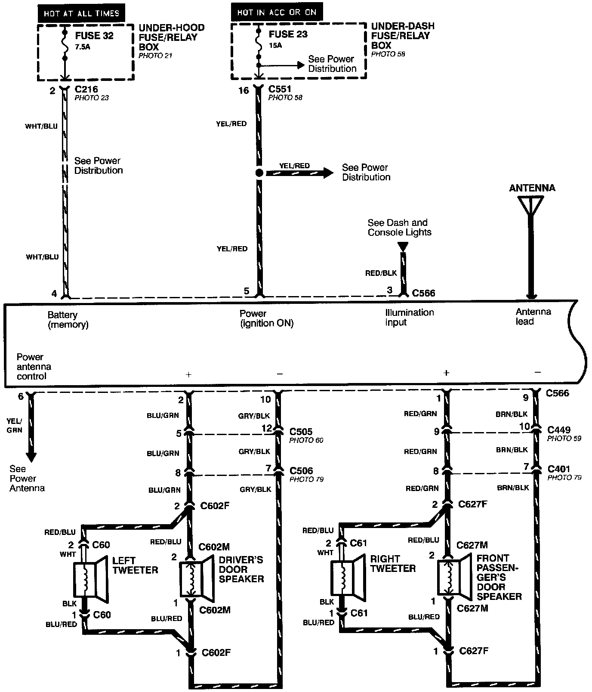
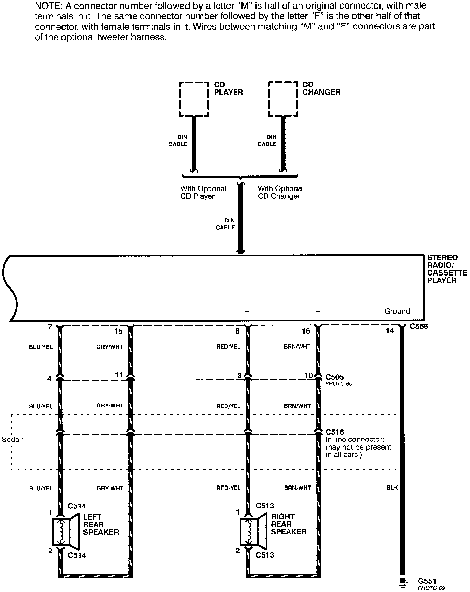

Operation CHARM
: Car repair manuals for everyone.
Home
>>
Acura
>>
1995
>>
Integra (RS, LS) L4-1834cc 1.8L DOHC PFI
>>
Repair and Diagnosis
>>
Accessories and Optional Equipment
>>
Radio, Stereo, and Compact Disc
>>
Radio/Stereo
>>
Diagrams
>>
Electrical Diagrams
>>
With Optional Tweeters
With Optional Tweeters
Stereo Sound System-With Optional Tweeters (Part 1 Of 2):

Stereo Sound System-With Optional Tweeters (Part 2 Of 2):
